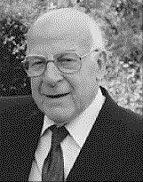

Cover Story - Arnold Beevers at 98
Cover Story - Arnold Beevers at 90

On May 27th 1998 the youthful Arnold Beevers celebrated his
90th birthday. Over the years, his contributions to science, to the
communication of science, and simply to the good humour of scientist and
non-scientist alike have been enormous. His name has left its mark in
three places: Beevers-Lipson strips, Beevers-Ross sites and Beevers
Miniature Models. They provide a very good starting place for talking about
Arnold the man.
It is difficult for the modern crystallographer, whose Fourier syntheses
are calculated so quickly that they don't even give time for a good swig of
coffee, to realise the appalling task of actually carrying out even a two
dimensional synthesis. A modest grid of 30 x 30 and 400 data meant that
for a centrosymmetric structure, cos [2p (hx+ky)] had to be evaluated 36 000
times. This seriously limited the possibility of using Fourier methods at
all, and made three dimensional summations almost unthinkable. Arnold
Beevers and Henry Lipson realised that the number of sums could be greatly
reduced by factoring the expression into one dimensional terms, and that for
all practical purposes a simple box of paper strips could be organised for
lining up and summing the necessary values. These were first published in
1936,(1) and a description of their use will appear in a future
issue of Crystallography News - although it should be admitted that their
efficient use depended on a standard of mental arithmetic not so common
today as then! Between 1948 and 1970, 500 sets of strips were sold
worldwide, and the production, trimming and packing of a new edition of
strips was an unforgettable experience. The method of calculation is still
used at the heart of many computer programs, even if the elegant boxes of
strips have disappeared. It is, however, typical of Arnold's contribution
to this work that a good fundamental idea was linked to a straightforward
device for realising it.
Arnold was involved in the solution and interpretation of many key early
structures, including the alums, copper sulphate and glucose. One of the
most serendipitous of these was the structure of b-alumina, carried out with
the late Marion Ross and published in 1937(2). This structure was
of interest to ICI at that time, as this "form of alumina" was a nuisance
- a gritty by-product in the production of the desired a-alumina. Beevers
and Ross correctly diagnosed that it had the much more complex formula
NaAl11O17, and gave their names to both possibilities
for cation occupation: the Beevers-Ross sites and the
anti-Beevers-Ross sites. More recently, the importance of this
structure has grown immeasurably, of course, as it was recognised as a solid
electrolyte.
Arnold had experimented much with models and structural representations.
Not all of them were lasting - a model of the sucrose - sodium bromide
complex made of glitter wax eventually had to be discarded when the amount
of adsorbed dirt totally obscured the colours of the drooping balls, which
were in any case falling off the dangling rods. In 1961, Arnold decided to
make models of stainless steel rods and perspex balls, settling on the three
basic parameters of a ball and stick model : the overall scale, the diameter
of the balls and the diameter of the rods. A scale of 1 cm per Å
(108) was selected, along with balls of 7mm diameter
and rods of 1 mm diameter. This enables balls to be drilled to a depth of
2.5 mm, giving for a firm hold on the rod with no collision of rods in the
centre, and models which are small and easy to store. In order to produce
accurate models on this scale, Arnold designed several two-circle drills, to
be capable of drilling any combination of angles and torsion angles. These
compact, exceedingly attractive and very accurate models continue to be
produced, and have invaded most of the known world.(3) They are now
marketed under the name of
Beevers Miniature Models.
The
ability to clarify complex structures was another of Arnold's gifts.
His 1946 paper in the Mineralogical Magazine (complete with colour
diagram!)4 helped to explain the structure of apatite, the
mineral of bone and teeth (see the cover picture) and the significance of
the replacement of hydroxide by fluoride. For many years Arnold lectured to
Edinburgh Dental students, and is a proud life-member of their society. He
has long been an ardent advocate of preventing fluoride deficiency in
humans! Another
less well-known incident involved his examination of a
sample of bath salts for a firm, whose customers had complained that they
were "uncomfortable". Examination showed that the crystals were tetrahedral
in form, and, as a bather sat on the crystals dissolving on the base of the
tub, they were predictably uncomfortable! Arnold solved the problem by
recommending that only salts crystallising in centrosymmetric space groups
should be used in future!
His
advice was usually right, although often not what was wanted! An
excited poultry researcher once gave him a sample of eggshells that he
claimed a test of his had shown to consist of aragonite rather than calcite.
X-ray powder diffraction soon showed that they were pure calcite, like other
eggs. Arnold pointed out that hens usually understand these matters better
than scientists do! On a famous occasion one Christmas, he asked to see
the manager of a Princes Street shop in Edinburgh to point out that
decorating the windows with four and eight-pointed snowflakes was a
disservice to the truth! The manager was not impressed, but there may be
some meaning in the fact that while the shop has long disappeared, Arnold
flourisheth yet - Happy Birthday Arnold, and many more!
R.O. Gould
University of Edinburgh
References
(1)Lipson H. and Beevers C.A., Proc. Phys. Soc.,
48, 772-778 (1936)
(2)Beevers C.A. and Ross M.S., Zeit. Krist.,
97, 59-66 (1937)
(3)Beevers C.A., Education in Chem.,
11, 198-200 (1974)
(4)Beevers C.A. and McIntyre D.B.,
Mineralog. Mag., 27, 254-7 (1946)
Editor's Note:
The picture on the front cover shows the structure of apatite,
see story above. It was also provided by Bob Gould. It is a copy of that on
the 'birthday card' signed by most of those attending the BCA St,Andrews
conference, where Lindsey Sawyer recalled a ditty he wrote which was inspired
by one of Arnold's lectures:
Twinkle, twinkle little star,
How I wonder how you are!
For you have five points, I see,
And I know that cannot be.
You must be point group thirty-three,
A new system of symmetry.
Last update: 20 Jul 98
 Click here to return to BCA homepage
Click here to return to BCA homepage